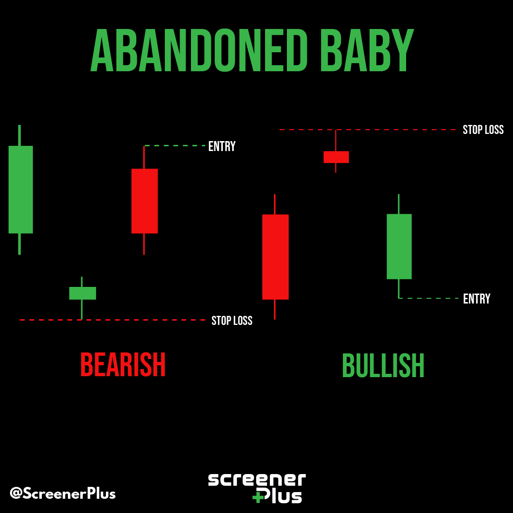

What is a candlestick chart and what are candlestick patterns?
When it comes to trading, emotions should not interfere in the process of making decisions. However, it's easier said than done. People's emotions play a major role in the pricing process of any investment assets such as cryptocurrency and stocks. If people feel good about something, they will buy more of it. On the other hand, if they think that an asset is not worth their money, they will sell it.
And when people buy something more, the price of that asset goes up. That is how the market works. Prices are nothing but a reflection of people's emotions. It makes sense because people are the ones who drive the market. To make better decisions when trading, it is important to understand how people's emotions move the market.
But how can you use this extremely useful information to your advantage? With the help of a candlestick chart of course. A candlestick chart is a type of financial chart that is used to track the price movements of assets such as stocks, cryptocurrency, etc. Candlesticks are just information-packed graphical representations of price data over a certain period.
Let's find out more about candlestick charts and the different types of candlestick patterns.
What is a candlestick chart?
Candlestick charts were invented by Japanese rice trader Munehisa Homma in the 18th century. He is also known as the "father of candlesticks". Candlestick charts are now used by traders all over the world to make better decisions when trading.
Homma made this chart to find the link between the price of rice and the supply and demand of the rice. He noticed that there was a strong relationship between the emotions of the market participants and the prices of rice. He used this information to his advantage and made a lot of money trading rice.
Candlesticks show how people feel about the stock prices and visually represent them with different colors. People who trade use candlesticks to make decisions about the short-term direction of the price. Candlesticks show regularly occurring patterns that help predict future movements in price.

Understanding Candlesticks' components
Each candlestick on a candlestick chart has 4 components:
1. The body:
This is the part between the open and close price. If the stock closes higher than it opens, the body is colored green. If the stock closes lower than it opened, the body is colored red.
2. The upper shadow or wick:
This is the part that represents the highest price point reached during the trading period.
3. The lower shadow or wick:
This is the part that represents the highest price point reached during the trading period.
4. The candlestick line:
This is a thin vertical line that represents the opening and closing prices. If the stock closes higher than it opened, the line is green. If the stock closes lower than it opened, the line is red.
What is the high price?
The high price is the highest point reached by the stock during the trading period. This information is represented by the upper shadow or wick.
What is the low price?
The low price is the lowest point reached by the stock during the trading period. This information is represented by the lower shadow or wick.
What is the open price?
The open price is the starting price of the stock at the beginning of the trading period. This information is represented by the candlestick line.
What is the close price?
The close price is the ending price of the stock at the end of the trading period. This information is represented by the candlestick line.
How can you use the candlestick chart to your advantage?
The candlestick chart is a very powerful tool that can help you make better decisions when trading. By understanding the different components of a candlestick, you can get a better idea of how people are feeling about the stock or crypto and its future price movements.
You can also use candlesticks to spot different patterns that occur regularly in the market. These patterns can give you clues about the future direction of the price. Let's take a look at some of the most popular candlestick patterns.
What are some popular candlestick patterns?
Here are some of the most popular candlestick patterns:
1. The hammer
Hammer is a type of candlestick pattern that signals the end of a downtrend and the start of a new, bullish trend. The main part of this candle is small and is located at the top. The lower shadow should be bigger than twice the size of the real body. This candlestick chart pattern has little to no upper shadow. This candle formation means that the prices opened low and that sellers pushed the prices down.
2. Piercing Pattern
A piercing pattern is a type of candlestick chart pattern that forms after a downtrend. This pattern indicates that the market is about to reverse and go bullish. The piercing pattern is made of two candles. The first candle is a bearish candle, which means the trend is continuing downwards. The second candle is bullish. This means that the bulls are back in the market and that a bullish reversal is going to take place.
3. Bullish Engulfing Pattern
A bullish engulfing pattern is a type of candlestick chart pattern that forms at the end of a downtrend. This pattern indicates that the market is about to start a new, bullish trend. The bullish engulfing pattern is made up of two candles, the first candle is a bearish candle, which means the trend is continuing downwards. The second candle is bullish. This means that the bulls are back in the market and that they are ready to start pushing prices up.
4. The Morning Star
Next up we have the morning star pattern. It's a multi-candlestick chart pattern that usually signals the end of a bearish trend and the beginning of a new, bullish trend. The morning star is made up of three candles: Berish, Doji, and Bullish.
Berish, the first candle indicates that the downtrend is continuing. The Doji candle is a special type of candle that has open and close prices that are almost equal. This means that there is indecision in the market. The third and final candle is Bullish, which indicates that the bulls are back in the market and they are ready to start pushing prices up.
5. Three White Soldiers
The Three White Soldiers is another multiple candlestick patterns that can indicate a bullish reversal after a downtrend. The three long bullish bodies in this candlestick chart are not enclosed by lengthy shadows and are available within the real body of the prior candle in the pattern. This pattern helps to signal to traders that a significant change in market trend may be underway.
6. Bearish Evening Star
An evening star is a pattern that goes up and the last candle in the pattern opens below the previous day's small real body. The small real body can be red or green and the last candle closes into the real body of the candle two days prior. The pattern shows that buyers are not buying as much and then sellers are starting to sell more.
7. White Marubozu
The White Marubozu is a candlestick pattern that forms after a downtrend and indicates a possible reversal to bullish sentiment. This candlestick has a long, strong body that shows the bulls are pushing the market higher. There are no shadows on top or bottom, which means the buyers are in control and the market may turn bullish.
8. Three Inside Up
The Three Inside Up is a pattern that traders look for to indicate a potential reversal from a downtrend. There are three candlesticks. The first is a long, bearish candle. The second is a small, bullish candle that should be in the same range as the first candle. The third candlestick should be a long candlestick that confirms the reversal from bearish to bullish.
9. Bullish Harami
The Bullish Harami is a pattern on a chart that shows when the stock is starting to go up. It happens after the stock has been going down for a while. There are two types of candlestick charts- the first is a tall, bearish candle and the second is a small, bullish candle that should be within the range of the first candle. The first candle shows that the bearish trend is continuing and the second candle shows that the bulls are back in the market.
10. Tweezer Bottom
The Tweezer Bottom candlestick pattern is a bullish reversal pattern that is formed at the end of a downtrend. A bearish candlestick consists of two candlesticks: the first is a bearish candle, and the second is a bullish Candle. The candlesticks form an almost identical low. When the Tweezer Bottom candlestick formation occurs during a downtrend, it's known as a downtrend.
11. Inverted Hammer
The Inverted Hammer formation is a bullish reversal pattern that forms at the end of a downtrend. In this candlestick, the real body is at the end and there is a long upper shadow. The Bearish Engulfing pattern is the mirror image of the Hammer Candlestick formation. When the opening and closing prices are near to each other, and the upper shadow is greater than twice the real body, this pattern forms.
12. Three Outside Up
The Three Outside Up is a pattern that makes three outside up candlesticks after a downwards trend to reveal a bullish reversal. A bearish engulfing pattern is formed by three candlesticks: the first, is a short bearish candle, and the second candlestick is a big bullish candle that should cover the first. The third candlestick should be a long candlestick that confirms the reversal from bearish to bullish.
13. On-Neck Pattern
The on-neck pattern occurs right after a downtrend when a long, real-bodied bearish candle is followed by a smaller, real-bodied bullish candle that gaps down on the open but then closes near the prior candle's close. Because the two closing prices are nearly identical or exactly equal to the two candles, they form a horizontal neckline, this is why this pattern is called an on-neck pattern.
14. Bearish Harami
A bearish harami is a tiny real body (red) that is fully contained within the prior day's real body. This is not a pattern that should be acted upon, but it's one to keep an eye on. The pattern displays the buyers' hesitation. If the price keeps rising, everything may be fine with the uptrend; nevertheless, a declining candle following this pattern suggests another decline.
15. Bearish Harami Cross
A bearish harami cross happens when there is an uptrend, and an up candle is followed by a Doji. A Doji means that the opening and closing prices are almost the same. The Doji is within the prior session's real body. The bearish harami transfer has the same implications as a Doji.
16. Two Crows
A three-line bearish reversal candlestick pattern is the Two Crows. The formation of a support area or a trendline may be confirmed by the completion of subsequent candles, which should break through these lines. If the pattern is not confirmed, it may function simply as a brief pause within an upswing. Although the name implies two lines come from it, in fact, there are three lines.
17. Three black crows
The three black crows pattern is a bearish candlestick pattern that may predict the reversal of an uptrend. Candlestick charts display the day's opening, high, low, and closing prices for a single security. When a stock price is going up, it is shown as a white or green candlestick on most charts. When the stock price is going down, it will be shown as a black or red candlestick. The black crow pattern is made up of three long-bodied candlesticks that opened within the real body of the previous candle and closed lower than the previous candle.
18. Three Inside Up/Down
A pair of candle reversal patterns (each made up of three distinct candles) are known as "three inside up" and "three inside down." The configuration of three candles in a particular order indicates that the present trend has lost momentum and that a shift in another direction may be on the horizon. The majority of these patterns are brief-term in nature, and may not always lead to a significant or even minor trend shift. Consider how these designs might fit into a greater picture. For example, during a pullback in an overall uptrend, use the three inside up.
19. Three-Line Strike
A three-line strike is a continuation group of candlesticks that has three bars in the direction of a trend, then a final candle that retreats to the start point. Traders take advantage of the three-line strike as an opportunity to buy at a current low or sell at a current high. In simple words, a three-line strike is just a bullish or bearish candlestick pattern that has three candles of the same color. Even though it is a continuation pattern, it can be used to trade reversals as well.
20. Three outside up/down
The three outside up and three outside down are candlestick chart patterns representing three-candle reversals. The candles must form in a specific order to indicate that the current trend is losing momentum and may signal a reversal of an existing trend. The formation of a pattern occurs when a dark candlestick is followed by two white-body ones or vice versa. Each tries to capitalize on market psychology in order to forecast near-term shifts in attitude. This means that three outside up/down patterns can be found at the end of a downtrend as well as at the beginning of an uptrend.
21. Three Stars In The South
The three stars in the south are an extremely unusual three-candle bullish reversal pattern that appears on candlestick charts. A falling lower tail indicates that the bearish sentiment is dissipating, and it may appear after a decline. Following a price decline, three black or red (down) candles are formed using decreasing-sized candles. A bullish reversal is confirmed when the price reaches a high-enough price and then moves lower. However, before taking a trade, the price should eventually move in the anticipated direction.
22. Three Advancing White Soldiers
A bullish candlestick formation with three white soldiers is a signal that the current trend will be reversed in an asset's pricing chart. The pattern consists of three long-bodied candlesticks in a row. The first two candles open within the previous candle's real body. The third candle closes at a price that is higher than the previous candle's high. These candlesticks should have short shadows and be within the real body of the preceding candle.
23. Abandoned Baby
The abandoned baby is a candlestick formation that signals a downward trend reversal. The three-bar falling sequence is the formation of a downtrend. The first bar, which is large and down, gaps below the previous candle. A Doji candle follows, closing lower than the preceding candle. The following candle opens higher than the Doji and surges aggressively to the upside. Traders can take a long position when the price is above the confirmation candle.

24. Advance Block
A candlestick trading pattern is known as the advance block. The pattern is a three-candle bearish setup that is regarded as a reversal pattern. On the other hand, a common technical strategy is to use price momentum indicators to identify potential changes in trend direction. According to this method, price action is expected to shift from an upward trend to a downward one in short time frames. Some traders suggest that the formation often leads to a bullish continuation instead of a reversal.
25. Belt-hold
There are two types of belt-hold patterns: Bearish belt hold pattern and Bullish belt hold pattern. The belt-hold is a single candlestick pattern that can be found in any time frame. It occurs when the opening price is equal to the closing price, and the candlestick has no or very short shadows. The belt-hold line indicates indecision in the market, with neither bulls nor bears gaining control. A bearish belt hold happens when the candlestick is found in a downtrend, while a bullish belt hold occurs during an uptrend
26. Breakaway
A breakaway candlestick pattern indicates the start of a new trend after an established one on the fifth day, following a first-day entry in the previous trend. This candlestick also has two variants such as the Bearish and Bullish Breakaway. The Bearish Breakaway happens during a downtrend when the market opens higher than the close of the previous day but then goes on to close lower than the open, forming a long red candlestick.
On the other hand, a Bullish Breakaway occurs during an uptrend when the market opens lower than the close of the previous day but then goes on to close higher than the open, forming a long green candlestick
27. Closing Marubozu
The Marubozu closing is a more robust candlestick formation. This occurs when the closing price is equal to the high or low of the day. Marubozu is a term used to describe patterns that may develop when the price fluctuates between the low and high. When the closing price is equal to or below the low, it's known as bearish; when it's greater than or equal to the high, it's called bullish.
It indicates the prices for the stocks maintained their movement in the same direction after people became nervous during the opening. The traders maintained their emotions until the end of the trading session.
28. Concealing Baby Swallow
The concealing baby swallow candlestick formation is a bullish reversal pattern that appears during a downward trend. The candlestick has four bars that show the early signs that the downtrend is weakening. This means that the bears are losing control and the bulls are starting to take over. The logic behind this pattern is that bulls respond quickly to the first two candles occurring during a downtrend. For traders, this is a signal to enter the market and take a long position.
29. Counterattack
The counterattack candlestick pattern is a signal that the current trend in the market is about to reverse. There are two types of counterattack patterns: the bullish counterattack pattern and the bearish counterattack pattern. Similar to other reversal patterns, the counterattack pattern is found at the end of a trend. Traders can use this pattern to enter the market or exit a position. The main benefit of using this pattern is that it can provide traders with an early warning sign that the trend is about to change
30. Dark Cloud Cover
A dark cloud cover is a bearish reversal candlestick pattern. This happens when a down candle (usually black or red) opens higher than the close of the previous up candle (usually white or green) but then closes below the midpoint of the up candle.
The pattern is important because it shows a change in momentum from going up to going down. The pattern is formed by an up candle followed by a down candle. Traders seek for the price to keep declining on the following (third) candle. This is referred to as confirmation.
31. Doji Star
A Doji Star candlestick formation is a three-bar pattern that indicates the possibility of a market trend reversal. It is a versatile candlestick pattern that may be found in two forms: bullish and bearish. Its variants are determined by the trend in which it thrives. When it comes to traders, the Doji Star is one of their favorite candlestick patterns because it gives them an early signal that the market is about to change direction
32. Dragonfly Doji
A Dragonfly Doji is a type of candlestick pattern that indicates the potential for a price reversal to the downside or upside, based on previous price activity. It's made when the high, open, and close prices are equal for an instrument. The lengthy lower shadow suggests that there was a lot of selling during the candle's period, but since the price closed near to the opening, it implies that buyers were able to absorb the selling and push the price back up.
33. Engulfing candles
Candles that are completely engulfed typically indicate a market reversal. This pattern entails two candles, the final of which ‘engulfs' the entire body of the candle before it. The engulfing candle can be bullish or bearish, depending on where it forms in relation to the current trend. Again, a bullish engulfing pattern forms at the end of a downtrend and is used as a signal to go long. A bearish engulfing pattern, on the other hand, forms at the end of an uptrend and is viewed as a trigger to enter into short positions.
34. Evening Doji Star
An evening Doji star is formed by a long bullish candle that gaps up, then a Doji that gaps down, and finally a third bearish candle that gaps down and closes well within the body of the first candle. The Evening Doji Star is a bearish three-candle reversal pattern that looks similar to the Evening Star. The only distinction is that the Evening Doji Star requires a second candle, which must be a Doji candle.
35. Up/Down-gap side-by-side white lines
A three-candle continuation pattern is formed by the up/down gap side-by-side white lines on candlestick charts. The up version is when a white candle is followed by a gap up, and two more white candles of similar size. The down version is when a black candle is followed by a gap down, and two more white candles of similar size.
The pattern is a continuation one, which means the price is anticipated to follow the trend (first candle), as shown by the pattern. The pattern's reliability in terms of trends continuing after it varies from moderate to high, but frequently the price movement following the pattern will be modest, indicating that it isn't a major signal.
36. Gravestone Doji
A Gravestone Doji is a bearish reversal candlestick pattern that shows up when the open, low, and closing prices are near one another with a long upper shadow. The lengthy upper shadow indicates that the start of the session was overcome by bears in the conclusion. It often happens before a longer-term bearish downtrend. It's a sign of possible selling pressure in the future.
37. Hanging Man
The hanging man is a form of candlestick pattern that displays the highest, low, opening, and closing prices for a security over a certain time. Hanging Man Candlesticks are used by some technical traders to assess when to enter and exit trades, reflecting investors' sentiments' impact on security prices. It can be a useful tool for traders to have in their arsenal, as it might provide early indications of potential market reversals
38. Harami Cross Pattern
A harami cross is a candlestick formation in which there is a large candlestick moving in the direction of the trend, followed by a small Doji candlestick. The Doji is completely enclosed within the body of the preceding candlestick. The harami cross pattern indicates that the current trend might be going to reverse.
There are two variants of a harami cross pattern: bullish or bearish. A bullish or bearish pattern indicates that the price may change direction, with a bullish pattern implying an upside reversal and a bearish pattern implying a downside reversal.
39. High-Wave Candle
High-wave Candlesticks indicate situations in which the market is having difficulties achieving a consensus on the value of a security. They are an indication of an atmosphere of uncertainty and doubt. Neither buyers nor sellers have any clarity as to where the market will go next. This means that there is a lot of indecision and that the market is highly volatile. Traders can use this information to their advantage by taking positions that are in line with the current market sentiment.
40. Hikkake Pattern
The hikkake pattern is a price pattern that is used by technical analysts and traders to identify a short-term movement in the market's direction. There are two distinct patterns, each with its own set of rules. The first is a short-term downward price movement, and the second is a short-term upward price movement. It could be useful for day traders to be aware of, as it might provide early indications of potential market reversals.
41. Modified Hikkake Pattern
The modified hikkake pattern is a lesser-known variation of the classic hikkake pattern and is considered a reversal pattern. The original version and the modified version are very similar in terms of functionality; however, rather than a "context bar" between the inside price bar/candle and the main price bar/candle, there is a "context bar."
As a result, the altered version includes a context bar, an inside bar, and a simulated move followed by a movement above (bullish) or below (bearish) the inside bar high or low, respectively.
42. Homing Pigeon
The bullish homing pigeon is a candle formation in which one large candle is followed by a smaller candle with a body that occurs within the scope of the larger candle's body. Candles in the pattern must be black or filled, indicating that the closing price was lower than the opening price. This pattern may suggest that the current downward trend is weakening, which raises the chance of an upside reversal.
43. Identical Three Crows
The identical three crows candlestick pattern is a bearish reversal pattern that shows up as a result of an upswing. It only forms when the opening and closing prices of one day are nearly identical. The success of the trade based on the identical three crows pattern is contingent on the formation's clearance. This means that the candlesticks should be located below a significant support level, which will act as a point of reference for placing a stop-loss order.
44. In-Neck Pattern
The in-neck candlestick pattern is a two-bar pattern that is simple to see, but traders must focus because it appears very rarely. It mostly appears in a downtrend and is thought to be a bearish continuation pattern. The in-neck candlestick pattern is made up of two candles: the first candle is black or red, and the second candle is white. Both candles should have small bodies with long wicks.
45. Inverted Hammer
The inverted hammer is a candlestick pattern that happens after a downtrend. It is seen as a bullish reversal pattern, as it suggests that the market may be ready to turn around and head upwards. The inverted hammer has a long upper shadow and a small body at the bottom of the candlestick. The small body can be either red or green, but it is usually red. The upper shadow should be at least twice as long as the body.
46. Kicking Pattern
Kicking is a pattern that forecasts a change in the price trend of an asset. This pattern is identified by two candlesticks with a quick reversal in price throughout two candles. It's used to determine who has control of the direction of the market. The pattern suggests that investors are changing their attitudes about security. The change usually happens after the release of valuable information about a company, industry, or economy.
47. Kicking - bull/bear determined by the longer Marubozu
The bullish kicking candlestick is a two candles pattern that happens during a downtrend and it signals that the current bearish trend is about to reverse and become bullish. The first candle is a black Marubozu, and the second is a white Marubozu with an open space between them. These two Marubozu candles of the bullish kicking pattern are all you need to identify them. However, keep in mind that both candles should be Marubozu candles with no shadows.
The bearish-kicking candlestick pattern is a two-candle pattern that appears when the market is going up. It signals that the current bullish trend in the market is about to reverse and become bearish. The first candle is a white Marubozu, and the second is a black Marubozu and there is a gap between them. Prices finally reach their lowest point of the trading day, and the price drop resumes. The length of the candles is significant, as it defines the depth of a reversal. The gap is essential because larger gaps indicate a more spectacular turnaround.

48. Ladder Bottom
The ladder bottom is a five-candle reversal pattern that signals a rise is on the way after a drop and is made up of several lower closes, followed by a substantial price increase. It indicates that selling pressure is diminishing and buying pressure is on the rise. The pattern gets its name because it looks like a ladder that has been placed on the floor with the bottom rung missing. Traders can use this pattern to enter long positions.
49. Long Legged Doji
A Doji with a long leg signifies uncertainty about the security's price path in the future. Long-legged Dojis may also signal the start of a consolidation phase when the price forms one or more long-legged Dojis before moving into a tighter pattern or breaking out to establish a new trend. Now when it comes to traders, long-legged Dojis are special because they often occur at market turning points or potential reversals.
50. Long Line Candle
The long line candles are the ones that have a very long real body. The long line candle suggests that the opening and closing prices of assets are significantly different. This indicates that the price changed dramatically in a single trading session.
If the long line candle is very lengthy and has an opposing color to the previously displayed candles, it implies a reversal of the market's current trend. The long-line candlestick pattern is a trading design founded on the long-line candle.
51. Marubozu
The Japanese term for Marubozu means "bald head" or "shaved head," and this is evident in the candlestick's lack of wicks or shadows, indicating that the opening or closing price will be identical to the candle's maximum price. A Marubozu candlestick appears when a security's price moves between two nearby highs or lows in quick succession.
If no shadow is present, it indicates that the trading session began at a high price and ended at a lower one (or vice versa). The Marubozu candlestick pattern can aid in predicting the future direction of stock prices.
52. Matching Low
A matching low is a two-candle bullish reversal pattern. It signals that the selling may be coming to an end. The pattern is created when there are two long down candles (black or red) with matching closes. It is confirmed by a price move higher following the pattern. For traders, the pattern is a bullish reversal signal, and they can use it to enter long positions.
53. Mat hold pattern
A mat hold pattern is a candlestick formation that predicts the continuation of a prior move and there can be both bearish or bullish mat hold patterns.
A bullish pattern starts with a large upward candle, which is followed by a gap higher and three smaller candles that fall. The first candle's low must not be surpassed by the new candle's high. The fifth candle is a big candle that ends up going higher. The pattern appears in an overall upward trend.
The same thing occurs in the bearish version, except that candles one and five are large down candles, while those two through four are smaller and rise. You should keep in mind that these candles are below the high of the first candle. The pattern closes with a lengthy candle to the downside, candle number five. This only happens within a downtrend.
54. Morning Doji Star
A Morning Doji Star is formed by a long bearish candle, followed by a Doji gap below it, then a third bearish candle that closes well within the first candle's body and validates the reversal. It is considered one of the strongest bullish price reversal candlestick patterns. It shows traders that despite bearish pressure, the bulls were able to push prices back up. So it could be a good time to enter long positions as the market is likely to continue going up.
55. Rickshaw man
The rickshaw man candlestick pattern is a pattern that signals indecision in the marketplace. It has long upper and lower shadows, with a tiny real body in the middle of the candle. The rickshaw man should be used in other technical indicators, price action analysis, or chart patterns to suggest a potential trend shift or continuation. It helps traders to understand whether the market is in a period of consolidation or if there is a shift in momentum.
56. Rising/Falling Three Methods
The Rising Three Methods is a 5-candles pattern that indicates bullish continuation. Above the others, there is a large green candle, three tiny red ones, and a huge green one closing above them. On the other hand, the Falling Three Methods is a bearish continuation pattern that contrasts with the Rising Three Methods. It could be useful for traders who are trying to enter the market or add to their positions.
57. Separating Lines
The Separating Lines candlestick formation occurs when a bullish candle pattern is followed by a bearish candle pattern. It operates at the start of the previous bar in a downtrend, or when a bullish bar follows a bearish candle that opens below the opening of the prior candle in an upswing. It indicates that the market is in indecision and that there could be a potential trend reversal.
58. Shooting Star
The shooting star candlestick pattern is a bearish reversal signal that forms after an uptrend. It consists of a small real body with a long upper shadow and no, or a very short, lower shadow. The candlestick is created when the open and close are near the bottom of the candlestick, with the high forming the upper shadow.
The shooting star pattern is considered a bearish reversal signal because it shows that bulls were not able to sustain the prices at higher levels and that bears are now taking control. Traders can use this information to enter short positions or exit long positions.
59. Short Line Candle
The short line candle is a candlestick that has a very small body with upper and lower shadows of almost equal length. The candlestick can be either bullish or bearish, depending on the trend. If it forms during an uptrend, it is considered a bearish reversal signal. If it forms during a downtrend, it is considered a bullish reversal signal.
The short line candle is created when the open and close are at the same or very close to the same price level. The upper and lower shadows indicate that there was some bullish or bearish pressure, but neither side was able to gain control. This candlestick is considered a reversal signal because it shows that the market is in indecision and that a change in direction is possible.
60. Spinning Top
A candlestick that has a short real body that's vertically centered between long upper and lower shadows is known as a spinning top. The candlestick pattern demonstrates uncertainty about the asset's future route. It implies that neither party (buyer and seller) may be in control. It can be really useful to identify potential reversals or Continuations.
Spinning tops indicate a lack of directional momentum and they can be found at the top and bottom of trends as well as in continuation patterns. They are considered to be neutral patterns and can be either bullish or bearish, depending on the trend.
61. Stalled Pattern
A candlestick chart pattern that appears during an uptrend but indicates a bearish reversal is known as a stalled pattern. It's also referred to as a deliberation pattern. When a pattern remains stopped for an extended period, it implies that the market is undecided. It might indicate a limited ability for traders to make money quickly by making short-term trades. It can be really useful as it shows potential reversals.
62. Stick Sandwich
A stick sandwich is a technical trading signal that has three candlesticks appear to make up a sandwich on the trader's display. The middle candlestick in a stick sandwich will have colors from the candlesticks on either side of it. The range of the candlesticks on either side of the center candlestick will be greater than that of the middle candlestick. Stick sandwich formations can appear in either bearish or bullish signals.
63. Takuri (Dragonfly Doji with a very long lower shadow)
The Takuri candlestick pattern is a bullish reversal signal that forms at the bottom of a downtrend. It's considered to be a more reliable signal than the dragonfly Doji because it has a very long lower shadow. The candlestick is created when the open, high, and close are at the same price level with a long lower shadow.
The Takuri candlestick pattern is considered a bullish reversal signal because it shows that bears were not able to push prices lower and that bulls are now taking control. Traders can use this information to enter long positions or exit short positions.
64. Tasuki Gap
A Tasuki Gap is a candlestick chart pattern that's used to signal a continuation of the current uptrend. It's created when there's a downward gap between two candlesticks and the second candlestick has a long upper shadow. The Tasuki Gap is considered a bullish signal because it shows that bears were not able to push prices lower and that bulls are still in control. Traders can use this information to enter long positions or to stay in existing long positions.
65. Thrusting Pattern
A thrusting pattern shows up when a black candle is followed by a white candle. The white candle gaps lower, but it quickly starts to close the gap near the middle of the black candle's true body. The thrusting pattern is used to reflect bulls' attempts to intervene following a price decline. This can help traders to enter long positions or stay in existing long positions.
66. Tristar Pattern
A tristar is a candlestick formation with three lines that may indicate a reversal in the current trend, whether it's up or down. When three consecutive Doji candlesticks appear at the end of a lengthy trend, Tristar patterns are formed. A tristar pattern close to a significant support or resistance level increases the likelihood of a successful trade.
67. Unique 3 River
The Unique 3 river is a special type of chart pattern that predicts when the stock market will go up. Some people think it might also work the other way, meaning that it could predict when the stock market will keep going down. The Unique 3 river pattern is made up of three price candles. A bullish reversal occurs if the price rises following the pattern. If the price falls away from the pattern, it's a bearish continuation formation.
68. Upside Gap Two Crows
The upside gap two crows pattern is a three-day candlestick formation that suggests a price increase may be running out of steam and reversing lower. The pattern is uncommon because it requires three particular candles to be in a certain order. When it comes to interpreting the pattern, it's important to consider the market context in which it appears. For traders, it could be a sign to close long positions or to enter short positions.
69. Upside/Downside Gap Three Methods
The Upside/Downside Gap Three Methods consists of a three-bar candlestick pattern. As the name suggests, the upside gap three methods pattern suggests a bullish continuation of the trend, and, on the other hand, the upside gap three methods pattern suggests a bearish continuation of the trend. If you are a trader who is currently in a trade and you see this pattern forming, it would be a good idea to stay in your trade. Because this pattern is a continuation of the trend.
How to trade with the help of the candlestick chart?
So now we know what a candlestick chart is, how it works, and what candlestick patterns are. To trade with the help of a candlestick chart, you will need a platform that will enable you to trade.
Screener+ Plus is one of the most popular stock screening and trading platforms. It offers a wide range of features for both beginners and experienced traders.
One of the best features of Screener+ Plus is its candlestick charting tool. With this tool, you can easily find and trade candlestick patterns.
You will receive accurate and timely signals whenever a candlestick pattern forms. You can also use the Screener+ Plus simulator to practice trading with candlestick patterns. So make sure to check out Screener+ Plus today.
Conclusion
As you can tell by now a candlestick chart is a powerful tool that every trader should know how to use. It is very helpful in finding trading opportunities and also helps you to time your entries and exits. It gives you an idea of the market sentiment and can be used to find reversals. If you are planning to use a candlestick chart to trade, then make sure to check out Screener+ Plus as it is one of the best stock screening and trading platforms available today.